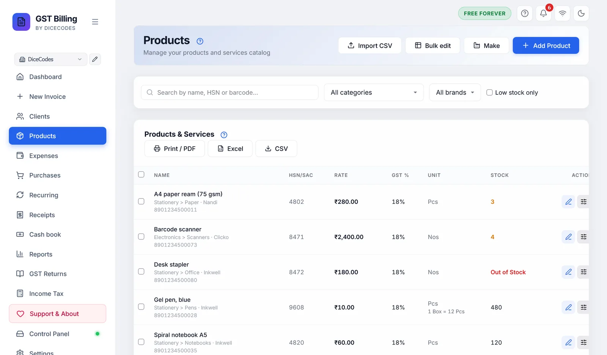

Products and stock
Save what you sell once, then pick it on every invoice. Stock goes down as you sell and up as you buy.
#The product list
Products in the sidebar opens your catalogue: the goods and services you sell or buy, with their prices, GST rate and stock. Save an item here once, and on every invoice you just type a few letters of its name to fill in the HSN, rate, unit and GST.

The buttons at the top of the screen. Small buttons show only an icon: point at one to see its name. In a narrow window, and on a phone, they are in the ⋯ button instead, with their names.
| Button | What it does |
|---|---|
| Import CSV | Adds many products at once from a spreadsheet. See Importing products. |
| Import product updates | Updates existing prices, HSN/SAC and optional stock from an edited CSV. See Updating products from a CSV. |
| Bulk edit | Turns the list into a grid you can type in, to change many products at once. See Bulk edit. Greyed out until you have a product. |
| Make | Only when manufacturing is turned on: records goods you made from raw materials. See Manufacturing. |
| Add Product | Opens the product form. See Adding a product or service. |
Search by name or HSN... narrows the list as you type (with Barcodes on, it finds the barcode too). The cross clears it.
Deleting many products at once: tick the box at the start of each row (the box in the header ticks every product the list shows), then click Delete selected and confirm. Only ticked products the list shows are deleted; invoices that used them keep their lines. Clear unticks them all.
Click a column header (Name, HSN/SAC, Rate, GST % or Stock) to sort the list by it: the first click sorts A to Z (lowest first), the second Z to A (highest first), the third puts the usual order back. A small arrow on the header shows the sort. Each list remembers its sort on this computer and browser. Services, which have no stock, go last when sorting by Stock.
The Products & Services table:
| Column | Shows |
|---|---|
| Name | The product name. Point at it to see its description. A product made from raw materials also shows Made here · cost ₹… per unit under its name. |
| HSN/SAC | Its HSN or SAC code, or a dash. |
| Rate | The selling price, with the MRP under it when the product has one. |
| GST % | The GST rate. |
| Unit | Pcs, Kg, Hrs and so on. |
| Stock | How many you have. Out of Stock in red at zero or below; the number in amber when it is at or below your low-stock threshold. Service for a service, which has no stock, and a dash (-) for goods whose stock was never entered: neither is ever out of stock. |
| Actions | The pencil (Edit) opens the product form; the bin (Delete) deletes it after asking. |
Products are shared by all your businesses, so each business sees the same list and the same stock.
#Printing or exporting the list
Print / PDF, Excel and CSV beside the table title save the products shown, with name, type (Goods or Service), HSN/SAC, purchase price, selling price, MRP, GST %, unit and stock. Search first to save only some. Print / PDF opens the print window, where you can choose a printer or Save as PDF. The buttons are hidden during a bulk edit.
A CSV saved here can be opened in Excel, and is a handy way to send your price list to an accountant. It can also be brought back in with Import CSV, or into another copy of the app.
#Updating products from a CSV
For a supplier price change across many saved items, choose Products → Import product updates. This changes existing products only; use Import CSV to add new ones.
- Download the current listClick Download current products CSV, then edit Purchase Price, Selling Price or HSN/SAC in your spreadsheet. Keep Product ID unchanged: it identifies the product even when names are similar. Without an ID, the name must match exactly apart from case and surrounding spaces, and match just one product.
- PreviewChoose the edited CSV. Review the old → new values and fix any errors before saving. Blank cells leave fields unchanged; 0 sets a price or stock to zero. Keep HSN/SAC as text in Excel to preserve leading zeros. Prices keep their existing before-GST or including-GST basis; this does not convert GST.
- Confirm and applyTick the confirmation and click Update … products. A backup of the affected records is saved first. If a value changed after your preview, the batch is refused: upload again to review the latest values. Failed writes are rolled back; an interrupted batch is recovered when the app next starts.
Stock is off by default. To replace stock balances, enable stock updates before choosing the CSV and give the separate stock confirmation after reviewing it. Quantities are final balances in each product's base unit, not an amount to add or a purchase receipt. Services cannot have stock. A price-only update leaves stock movements alone.
Unknown IDs, ambiguous names, duplicate rows, invalid numbers and malformed CSV block saving the whole batch. Other columns are shown as ignored. GST rates, units, names, price levels and saved invoices are not changed. Up to 10,000 rows and 5 MB per CSV; prices and stock accept up to four decimal places.
#Deleting a product
The bin asks Delete this product? first. Deleting removes it from your catalogue only: invoices and purchase bills that used it keep their lines unchanged. If it is a raw material of a product made here, the message names those products: remove it from their raw materials list too.
A product deleted here is not in the Trash; to get it back, add it again.
#Adding a product or service
- Open the formClick Add Product. To change a product, click its pencil instead; the form opens as Edit Product.
- Name itType the name as you want it printed on the invoice, such as "A4 Paper Ream 75 GSM" or "Website Maintenance".
- Goods or serviceUnder This is a, leave Goods (stock counted) for things you keep on a shelf, or click Service (no stock) for work you do, such as printing, repairs or consulting. See Goods or service.
- Codes and pricesFill in the HSN or SAC code, the purchase price, the selling price and the GST %.
- Unit and stockChoose the unit and, for goods, type how many you have today. A service has no stock box.
- SaveClick Save (or Update when editing). You see "Product added" or "Product updated", and it appears in the list.
Cancel closes the form without saving. So does clicking outside it, so finish and save before you click elsewhere.
| Field | What to know |
|---|---|
| Product / Service Name * | Required. Two products should not share a name: invoices, purchase bills and imports find products by name. |
| This is a | Goods (stock counted) (to start) or Service (no stock). See Goods or service. |
| HSN / SAC Code | HSN for goods, SAC for services. For a service the box is labelled SAC Code. See HSN and SAC codes. |
| Purchase Price | What you pay the supplier for one unit. Filled in on new purchase bills, used to value your stock and to cost things you make. |
| Selling Price | What you charge for one unit. Filled in on new invoices, and shown as the Rate in the list. Type it the same way your invoices work: before GST, unless you make tax-inclusive invoices. |
| MRP (optional) | The maximum retail price printed on the pack. Picking the product on an invoice copies it onto the line, where you can change it. It prints only when the MRP column is turned on, and it never changes the rate, the GST or the total. |
| GST % | The GST rate, such as 5 or 18. 0 to 100; blank counts as 0. Since 22 September 2025 most goods are at 5%, 18% or 40%. |
| Unit | Pcs to start. Pcs, Nos, Kg, g, Tonne, Ltr, ml, Mtr, cm, Ft, In, Rft, Sq.ft, Sq.m, Hrs, Day, Week, Month, Year, Visit, Session, Project, Word, Page, Box, Dozen, Pair, Set, Bag, Roll, Bottle, and your own custom units, marked ★. |
| Stock Quantity | Goods only. How many you have now. After this, sales and purchases change it for you; see How stock is counted. Left blank, the stock is not counted: the list shows a dash, never Out of Stock, until you type a number, buy it on a purchase bill or sell it. |
| Description (optional) | For your own reference. It shows when you point at the name in the list. |
| Price for each level (optional) | Only when Price levels is on: a price for each level, such as Wholesale and Dealer. Blank uses the selling price for that level. |
| Made here (from raw materials) | Only when manufacturing is turned on. See Bill of materials. |
Changing a product's price or GST % does not change invoices already made. New invoices use the new figures.
"Product name is required": fill in the name. "GST % must be between 0 and 100": type just the number, such as 18, not 18% or 0.18.
A service shows Out of Stock in red: it was saved as Goods (all products made before version 1.10.83 are). Click its pencil, choose Service (no stock) and click Update.
#Goods or service
Every product is either Goods, things you buy, keep and sell, whose stock is counted, or a Service, work you do, such as printing, repairs, design, consulting or transport, which has no stock.
| Goods (stock counted) | Service (no stock) | |
|---|---|---|
| Stock box in the form | Yes | No |
| Selling it on an invoice | Takes the quantity out of stock | Moves no stock, and never says "out of stock" |
| Buying it on a purchase bill | Adds the quantity to stock | Moves no stock |
| Low-stock alerts, the bell, the Dashboard low-stock strip, the stock report | Included | Never included |
| Manufacturing | Can be a raw material or be made here | Neither |
| Code box | HSN / SAC Code | SAC Code |
| Unit list | Every unit | Service units first (Hrs, Day, Month, Project, Nos, Page...). A new service starts on Hrs; change it to whatever you bill by. |
| Stock column in the list | The count, or Out of Stock | Service |
Products you already have stay Goods. To switch one, click its pencil, choose Service (no stock) and click Update; any stock it had is dropped. To switch back, choose Goods and type its stock.
On an invoice, picking a service from your products fills in that line's SAC, unit, rate and GST; other lines are not touched. For a service billed as one fixed fee, with no quantity on the invoice, see Goods, services or both.
When importing products from a spreadsheet, a Type column with Service makes the row a service. See Importing products.
#HSN and SAC codes
HSN (Harmonised System of Nomenclature) codes classify goods, such as 4802 for paper or 8471 for computers. SAC (Services Accounting Code) codes classify services and start with 99, such as 998314 for IT services. The code decides the GST rate and is reported in your GSTR-1, in the HSN summary.
- Businesses with a turnover up to ₹5 crore must show at least a 4-digit HSN on invoices to registered buyers; above ₹5 crore, 6 digits on every invoice.
- Find your code on your supplier's bill, from your accountant, or with the HSN search on the GST portal.
- On the invoice, the app knows the usual GST rate of common codes and shows it under the HSN box. See Line items.
See also the glossary.
#Bulk edit: changing many products at once
Use it when prices go up across the board, after a GST rate change, or to correct stock after counting your shelves. Bulk edit turns the table into a grid of boxes: Name, HSN/SAC, Purchase price, Selling price, GST %, Unit and Stock.
- Narrow the list (optional)Search first, for example by an HSN code, to edit only those products. The search box is locked while you edit.
- StartClick Bulk edit.
- Type the changesChange any boxes, in any rows. Each changed row turns blue, and the bar at the top counts them: "3 products changed".
- Save onceClick Save changes (3). You see "3 products updated" and the normal list comes back.
Cancel drops every change. Only the boxes you changed are saved: if an invoice in another window sold some stock meanwhile, that is not undone (unless you changed that product's stock yourself).
The same rules as the product form apply: every product needs a name, GST % must be 0 to 100, and prices and stock must be numbers. If one row breaks a rule, nothing is saved and you are told which product to fix, such as "Not saved: Tea: GST % must be 0 to 100". Make and the export buttons wait until you save or cancel.
"2 saved, 1 failed. Try again.": the app could not reach its data for one product. Click Bulk edit again, check the product, and save it again.
#How stock is counted
Stock is counted for a line only when it is linked to a product: picked from your products on the invoice or bill, not just typed in.
- Selling: saving a Tax Invoice, Bill of Supply, Composition bill or Delivery Challan takes the quantity out. Change the quantity later and save, and only the difference moves.
- Returns: a Credit Note puts the quantity back.
- Quotations and proformas move no stock. The invoice you convert them into does.
- Buying: saving a purchase bill adds the quantity in, and adds any new item to your products.
- Cancelling an invoice puts its stock back; un-cancelling takes it out again. Deleting an invoice puts its stock back too.
- Making: a production entry uses up raw materials and adds the finished product.
- Adjusting: an Adjust stock entry adds or removes goods damaged, lost, found or used in the shop.
- Boxes: a line in a product's second unit counts in its own unit: 2 boxes of 12 move 24 pieces.
Out of Stock shows in red at zero or below. Purchases and deletions never take stock below zero; selling more than you have does, so you notice.
A service is never counted. Goods whose stock box was left blank are not counted either until stock first moves: a purchase bill adds to them from zero, and a sale takes them below zero, so you notice.
The stock report shows each product's stock and value on any date.
#Adjusting stock (damaged, lost, found)
For goods that leave or come back without a bill, use the sliders button in a product's row (Adjust stock):
- ReasonChoose Damaged, Lost or stolen, Used in the shop (these remove), Found (adds) or Opening stock correction (either).
- Quantity and dateType how many, in the product's own unit, and the date it happened. Add or remove follows the reason; change it if needed. A note is optional.
- SaveClick Save adjustment. The stock moves at once, and the window showed what it will be.
Each adjustment is kept with its date and reason, listed under the stock report for its month, and counted when that report works out stock on an earlier date. The bin there deletes one and puts the stock back. With the books closed up to a date, an adjustment on or before it cannot be added or deleted.
To set many counts at once after counting the shelves, Bulk edit still works: type the counts in the Stock column. Stock typed in by hand has no date, so the stock report counts it as if it changed today.
Stock is one count per product. There are no batches, expiry dates or godowns. Serial numbers can be written on purchase bill lines. See Limitations.
#Low-stock alerts
A product at or below your threshold shows its stock in amber here, is listed on the Dashboard, and adds to the notification bell. The threshold is 5 to start; change it, or turn alerts off, in Settings. It is one threshold for every product. With alerts off, stock is still counted and Out of Stock still shows in red.
Low stock only beside the search lists just those products. With purchase orders turned on, Make purchase order then opens a new purchase order with them: enough of each to reach twice the threshold (threshold x 2 - stock, at least 1), at its purchase price. Choose the supplier, check the quantities and save; nothing is ordered until you do. The same button is on the Dashboard's low-stock strip.
#Categories and brands
Group your products, such as Garments > Men > Shirts > Formal: a main category and up to 3 levels under it, typed with > between them in the product form's Category box (the ones already used are offered as you type). Brand is a box of its own. Both are optional, and they are the "stock groups" some programs have: one tree, not two.
Once a product has one, the list shows them under its name, and filters appear beside the search: All categories and All brands. Choosing a category also shows everything under it (Garments shows Men, Shirts and Formal too). The same filters are on Product Performance and the stock report. The CSV export and import carry Category and Brand columns.
#Alternate units (Box = 12 Pcs)
For goods you sell or buy both loose and by the box: open the product, click + Also sold or bought in a second unit, and fill in 1 Box = 12 Pcs (the second unit from the list, and how many of the product's own unit are in it). Optionally type a price per box; left blank, a box costs 12 x the selling price.
- Invoice: after picking the product, choose Box in the line's Unit. The rate becomes the box price; back to Pcs, the piece price again.
- Purchase bill: a Unit box appears on the line of such a product: Pcs, or Box of 12 at 12 x the purchase price.
- Stock always counts the product's own unit: selling 2 boxes takes out 24 Pcs, buying 3 boxes adds 36. The purchase price saved from a bill is per piece.
- GSTR-1: the HSN summary reports pieces (PCS) and the quantity in pieces, as the portal expects one unit per HSN line.
Invoices and bills made before keep their units as they were.
#Importing products from a spreadsheet
Have your price list in Excel, or moving from another program? Import CSV adds all the products and services at once.
- Open the windowClick Import CSV on the Products screen. The window Import products opens.
- Get the sample fileClick Download sample file.
Products-sample.csvlands in your Downloads folder, with the right column headings and two demo rows: a product (Goods) and a service. - Fill it inOpen it in Excel or Google Sheets. Replace the two demo rows with your own, one product or service per row. Keep the first row (the headings) as it is.
- Save as CSVIn Excel, File → Save As → CSV UTF-8 (Comma delimited) or CSV (Comma delimited). In Google Sheets, File → Download → Comma-separated values.
- Choose the fileClick Choose file. Nothing is saved yet: the window shows how many are new, how many saved products will get their empty details filled in, how many are already in your list (skipped), and every row with a problem.
- ImportClick Import (it shows the number, such as Import 40). You see "Imported 40 products", and they appear in the list.
From Excel or Vyapar: you can choose an Excel file (.xlsx) instead of a CSV, such as the item list Vyapar exports. If the file has several sheets, pick the one with your items under Sheet.
From Tally: in Tally, go to Gateway of Tally → Export → Masters, choose format XML and export. Choose that .xml file here. Your stock items come in with their HSN, GST rate, unit and price. Stock is not brought in: enter today's stock after the import.
Importing again fills in blanks. A product already in your list is never added twice. If it has empty details (no HSN, no price, no MRP, 0% GST with no HSN, no unit or stock), they are filled in from the file. A detail that already has a value is never changed.
The columns (headings in small or capital letters, in any order; spaces and % do not matter):
| Column heading | Holds |
|---|---|
Name (or Product, Product Name, Item) | Required. Rows without a name are skipped. |
Type | Goods or Service. Blank means Goods. A service gets no stock. See Goods or service. |
HSN/SAC (or HSN, SAC, HSN Code) | HSN or SAC code |
Unit | Nos if left out. Write it as in the app's list (Kg, Ltr, Pcs, Hrs, Page), so the GST returns get the right unit code. |
Purchase Price (or Cost) | What you pay for one unit |
Selling Price (or Rate, Price) | What you charge for one unit |
MRP (or M.R.P., Maximum Retail Price) | Optional. The printed price on the pack, kept as typed (an MRP already includes tax). Blank or 0: no MRP. |
GST % (or GST Rate, Tax %) | GST rate, such as 18. 0 to 100. |
Stock (or Quantity, Opening Stock) | Opening stock of goods. Leave it blank for a service, or for goods you do not count. |
Description | Optional |
Barcode (or Bar code, EAN, UPC) | Optional. The product's barcode. A code another product already has is refused, with its row. |
Wholesale price (the level's name + price, or Level 2 price) | Only read when Price levels is on: the product's price for that level. One column per level. The Products export writes them the same way. |
The sample file looks like this:
Name,Type,HSN/SAC,Unit,Purchase Price,Selling Price,MRP,GST %,Stock,Description,Barcode
Demo A4 Paper Ream 75 GSM,Goods,4802,Nos,220,280,340,18,50,Sample goods row - replace with your own,
Demo Printing service,Service,998912,Page,,5,,18,,Sample service row - a service has no stock,Products you already have (same name, any capitals) are skipped, and so are repeats inside the file, so importing the same file twice is safe. The CSV saved by the CSV button above the list uses the same columns, so you can export, edit in Excel and import into another copy of the app.
Old invoices are imported somewhere else: on the Dashboard, with Import / export CSV, which has its own template. See Importing and exporting invoices as CSV. The link at the bottom of the import window goes there too.
A row is listed as a problem, such as "Row 4 (Tea): GST % must be 0 to 100" or "Type must be Goods or Service": fix that row in the file and choose it again (the rows already imported are skipped). Nothing is read: the file is not a plain CSV, or the headings are not in the first row. An .xlsx file renamed to .csv does not work. See A CSV import did not work.
#Barcodes
Give a product a barcode, and at the counter a USB barcode scanner adds it to the invoice in one beep. You can also print barcode labels for goods that have none. It is on to start for shops, wholesale and manufacturing; turn it on or off in Settings → Features (Barcodes, under the Products screen). Turning it off hides it; the codes stay saved.
- Open the productClick Add Product, or the pencil of a product.
- Its barcodeClick in Barcode (optional) and scan the code printed on the pack, or type it. Goods with no code of their own: click Make one. The app gives the shop's own next code (20000001, 20000002, ...), to print on labels.
- SaveClick Save. Each product needs its own code: one that another product already has is refused, with that product's name.
The code shows in small letters under the product name in the list, and Search by name, HSN or barcode... finds it. Imports and the CSV / Excel export carry it as the Barcode column (see Importing products).
#Scanning on an invoice
Once a product has a barcode, New invoice shows a Scan barcode box above the line items. Click in it and scan: the product goes on as a line with its rate, HSN, GST and unit, as if you had picked it from the suggestions. Scan the same product again and its quantity goes up by 1, on the same line. The box empties after each scan, so you can go on scanning. A code that no product has shows No product has the barcode ...: add it to the product first.
A scanner is a keyboard that types the code and presses Enter, so you can also scan (or type) a code into the Item box of a line and press Enter, and on a purchase bill into the item Name box. The box is not shown on a services invoice.
#Printing barcode labels
- Choose the productsOn Products, tick them and click Print labels in the bar above the list. Or, for goods just bought: open the purchase bill (the eye in the Purchases list) and click Print labels for this purchase: each product gets one label per piece bought (2.5 kg makes 3), matched to your products by name.
- How manyType the number of labels for each product. A product with no barcode gets none; Give them a code makes codes for them, as Make one does.
- The labelsUnder Labels choose your sheet or roll, under Price on the label the selling price, the MRP (the selling price with GST) or no price, and tick or untick Business name. The app remembers these.
- PrintThe preview shows the sheets as they print. Click Print, and in the print window set the scale to 100% (Actual size, not Fit to page) and the margins to None.
| Labels | For |
|---|---|
| A4 sheet, 65 labels (38 x 21 mm) | 5 across, 13 down |
| A4 sheet, 40 labels (48 x 25 mm) | 4 across, 10 down |
| A4 sheet, 24 labels (64 x 34 mm) | 3 across, 8 down |
| Thermal roll, 50 x 25 mm | A label printer: one label per page. Choose the 50 x 25 mm label size in the printer's own settings too. |
Each label shows the business name and price if chosen, the item name, the barcode (Code 128, which every scanner reads) and its digits under it.
Print one sheet on plain paper first and hold it against a label sheet. If it is shifted or smaller, the print window's scale is not 100% or its margins are not None.
#Manufacturing: making products from raw materials
If you make what you sell (furniture, sweets, garments, printed boxes), the app can use up the raw materials and add the finished product to stock in one step, and tell you what each unit costs you to make.
Turn it on first: Settings → Features, tick Manufacturing (bill of materials) and save. It is off to start, and turning it off again hides it without deleting anything. Once on, you get:
- a Made here (from raw materials) tick in the product form, for its bill of materials;
- a Make button at the top of Products, to record production;
- a Production list under the product table.
#1. Give the product its raw materials (bill of materials)
A bill of materials is the recipe: which raw materials, and how much of each, go into one unit of the finished product.
- Add the raw materialsAdd each raw material as a normal product, with its purchase price and stock (or buy it in on a purchase bill).
- Open the finished productClick its pencil (or Add Product for a new one).
- Tick Made hereTick Made here (from raw materials). A box opens: Raw materials used to make 1 unit of this product.
- List the materialsOn each line, choose the material under Choose a product… and type the quantity for one unit made; its unit shows beside the box. Add material adds a line; the cross removes one.
- Check the costCost per unit shows the materials' purchase prices times those quantities.
- SaveClick Update (or Save). The list now shows Made here · cost under the name.
Rules, checked when you save: at least one material; a product chosen on every line; every quantity more than 0; no product listed twice (add the quantities together on one line); a product cannot be in its own list; and two products cannot use each other (chair uses seat, seat uses chair). The message says which, and nothing is saved.
A raw material can itself be made here (a seat made from wood and foam). If it has no purchase price, its cost comes from its own raw materials.
Unticking Made here and saving stops the product being made; production already recorded stays.
#2. Make: record what you made
Each time a batch is finished, record it so stock stays right.
- Open MakeClick Make at the top of Products. The window is Make (record production).
- Product madeChoose the product. Only products with a raw materials list are offered.
- Quantity madeHow many you made, in the product's unit.
- DateToday to start. Change it if you are recording a batch made earlier.
- Note (optional)Anything to remember, such as "Batch 12".
- Check the tableEach raw material shows Per unit, Will use, In stock and Left after; the last row is the finished product with its stock after. Below it, Cost of materials for this batch, at today's purchase prices.
- SaveClick Save production. You see "Production saved: 10 Nos of Chair", the stock changes, and the entry is added to the Production list.
If a raw material would go below zero, it is shown in red with a warning, and saving asks Not enough raw materials in stock; Save anyway goes ahead. That is fine when you record production late and have not entered the purchase bill yet.
No product has a raw materials list yet.: give a product its raw materials first.
"Quantity made must be more than 0" or "Enter the date it was made": fill in those boxes. A message naming a product and a raw material means its list has a problem; open that product and fix the list.
"Could not save production, nothing was changed.": try again; if it keeps happening, see Saving and working in the app.
#Worked example
Abhishek Agrahari makes chairs. One chair takes 4 chair legs (₹50 each), 1 seat (₹300) and 0.2 kg screws (₹400 a kg), so the cost per unit is 4 × 50 + 300 + 0.2 × 400 = ₹580. Stock before: 100 legs, 20 seats, 5 kg screws, 3 chairs.
| Make 10 chairs | Used | Stock after |
|---|---|---|
| Chair leg | 40 | 60 |
| Seat | 10 | 10 |
| Screws | 2 kg | 3 kg |
| Chair (made) | +10 | 13 |
The entry's cost of materials is 10 × ₹580 = ₹5,800.
#3. The production list
Under the product table, Production lists the entries of the business you have open, newest first: Date, Product, Qty made, Cost of materials and Note.
| Control | What it does |
|---|---|
| From / To | Show only entries between these dates. Leave blank for all. |
| Print / PDF, Excel, CSV | Save the entries shown. |
| Eye (View) | Opens the entry: see below. |
| Bin (Delete) | Deletes the entry after asking, and puts its stock back exactly: in the example, 40 legs, 10 seats and 2 kg screws back, 10 chairs out. |
An entry cannot be edited: to change one, delete it and enter it again. The stock report counts production by its date.
#Viewing a production entry
The eye opens Made 10 Nos of Chair (the quantity and product), with its date and note, and a table of each Raw material used with its Qty, Rate and Cost, and the Total cost of materials. The rates are the purchase prices on the day it was saved, so changing a price later does not change old entries. Delete deletes it as above; Close closes it.